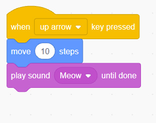

10. Click/press the ‘Motion’ block menu.
11. Drag/use arrow keys and drop the ‘turn degrees’ block into the script area. Then, connect the ‘turn degrees’ block to the ‘when key pressed’ block, as shown/described in Figure 44.
12. Click/press the ‘Sound’ block menu.
13. Drag/use arrow keys and drop the ‘play sound until done’ block into the script area. Then connect that block to the ‘turn degrees’ block as shown/described in Figure 44.


Figure 44: A program with ‘up arrow’ and ‘down arrow’
14. Play your game using the up arrow and down arrow keys. These keys are found on your computer keyboard. What have you seen/observed and heard/felt?
15. In the ‘move steps’ block, change from 10 steps to 50 steps.
16. In the ‘turn degrees’ block, change from 10 to 30 degrees.
17. What changes do you observe when you compare the current findings to the ones you observed before adjusting the steps and degrees?